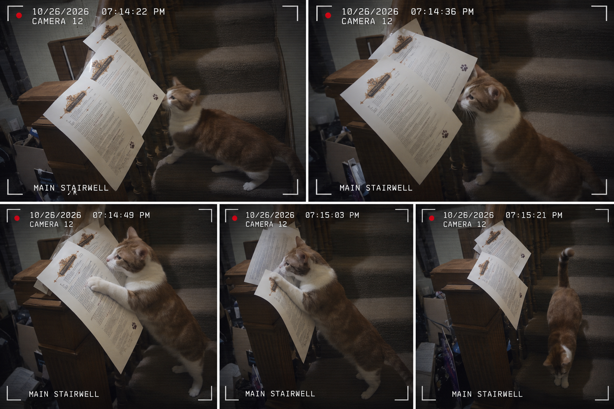

CAT CAUGHT IN ACT OF CIVIL DISOBEDIENCE
Stairwell Incident Sparks Constitutional Questions
An unidentified orange-and-white individual was observed posting inflammatory documents along a residential staircase. Witnesses describe the suspect as approximately twelve pounds, heavily whiskered, and completely unconcerned with the consequences.
Police have declined to make an arrest, citing jurisdictional confusion and an inability to locate handcuffs small enough.
According to security records, the individual approached the papers, inspected the scene, and departed with his tail held high. Authorities have declined to say whether this constitutes a confession, an inspection, or simply being a cat.

The Gazette reminds readers that possession of whiskers does not, in itself, establish criminal intent.